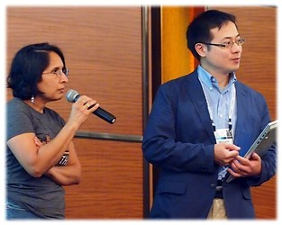

Kernel testing
Shuah started by noting that the kernel's automated testing framework was merged in the 3.17 development cycle. In the last year, the kselftest target has been added to the main makefile, so running the tests is a matter of a single command. There is also an install target that is useful for regression testing or for testing that requires cross-compilation. New tests have been added for the timekeeping, realtime clock, futex, and ftrace subsystems.
Ben Hutchings asked whether developers should expect all of the tests to pass, given that he has been seeing a lot of failures. It turns out that many of the tests are dependent on specific configuration options, but there is currently no way to limit which tests are run based on how the current kernel is configured. So, for many configurations, test failures are indeed to be expected, and it's hard to know which of those indicate real problems. This problem was mentioned a few times during the session.
Andy Lutomirski added that there is one x86 test that always fails. He found the problem after it had been present for several -rc releases. That indicates to him that not many people are running the tests in any regular way; he would like to see that change.
Masami added that a lot of people now depend on Linux worldwide, so we can't
afford to ship kernels that do not work properly. He said that the
reporting of bugs is often slow, even when the existing tests catch them.
Once again, that suggests that the tests are not being run that often. If

Kevin Hilman talked about ARM testing briefly. The ARM world, he said, has a lot of "creative hardware designers" that add a unique challenge of their own. He has been collecting a bunch of hardware test scripts and running automated boot tests, with results that can be seen at kernelci.org. The kselftest tests have been added into the mix. Kevin, too, noted that he has run into trouble from dependencies on configuration settings. He would like to see a better structure for the automatic tests, one that makes the dependencies clear. If a proper test-definition framework could be put together, it would make it easier to run the tests on a broader range of hardware and kernel configurations.
The tests, he said, are being run on as many boards as possible. He is still not sending out results, though, because he is still getting a lot of test failures. The tests are evolving quickly, and he would like them to stabilize a bit before he integrates them into his reports. Luis Rodriguez suggested that some sort of "confidence" tag attached to each test could help in deciding which ones to run. In response to a question from James Bottomley, Kevin said that the tests are run each time linux-next changes, since he does not have the hardware to run them with finer granularity.
Ted Ts'o said that the xfstests suite has a way of annotating tests that have been skipped for some reason; it would be nice, he said, if kselftest had that too. As things stand now, there are lots of failures reported, and that can cause real problems to be missed. Tim Bird added that it would be nice to have a mechanism to turn on all the configuration options needed to run a complete set of tests; there is no way to find out what those options are now. When new tests are added, he said, they should include documentation on which kernel configuration options they need.
Andy suggested annotating how long the tests are expected to take, noting that running the full set can take a while. Shuah said that there is a "quick tests only" option now, but it only works when the tests are built and run on the same system. Adding the option to the install target is on the to-do list. Are there requirements for external libraries to run the tests? There are none currently. There may be a need to add external dependencies in the future, but the tests need to fail gracefully if those dependencies are not available.
James asked about driver testing. Drivers tend to be the hardest thing to test, since they are deeply tied to specific hardware. Dan Williams has evidently been working on mocking hardware resources to allow a certain amount of testing; this work has been used for libnvdimm (persistent memory) development. Herbert Xu said it would be nice to have a simple testing package to give to people who actually have specific hardware available.
Johannes Berg said that there is a certain tension between the desire to add new tests and the need to keep their runtime within limits. The WiFi stack currently has a set of 1,600 tests that "takes forever" to run. These tests also exercise the user-space parts of the WiFi stack, so he is not sure they would be appropriate to add to the kernel's self-test suite. Shuah said that short execution time is not a requirement for tests; we would like to have them all in the kernel, though it is important to be able to separate out the fast ones.
Jan Kara described the "test groups" feature of xfstests. There is one group for tests that run quickly, one for those requiring a hard drive, another for tests that might crash the kernel, and so on. Such a structure could be useful for the kernel's tests as well.
The session ran out of time at this point. There is little disagreement
about the need for better tests — and the need for developers to actually
run those tests. This is an area that should continue to progress quickly
in the coming year.
| Index entries for this article | |
|---|---|
| Kernel | Development tools/Testing |
| Kernel | Regression testing |
| Conference | Kernel Summit/2015 |
Posted Nov 5, 2015 11:13 UTC (Thu)
by NAR (subscriber, #1313)
[Link]
Posted Nov 18, 2015 10:48 UTC (Wed)
by ksandstr (guest, #60862)
[Link]
Testing by newcomers?
The way to skip tests that depend on a particular configuration option (say, SSE presence on the designated target, as indicated by the __SSE__ #define) is Kernel testing
plan_skip_all("thingamabob isn't present, can't go on"); return;. Perhaps a spot of TAP advocacy is warranted; the common "pile of assertions" style of test looks fairly long in the tooth in comparison.